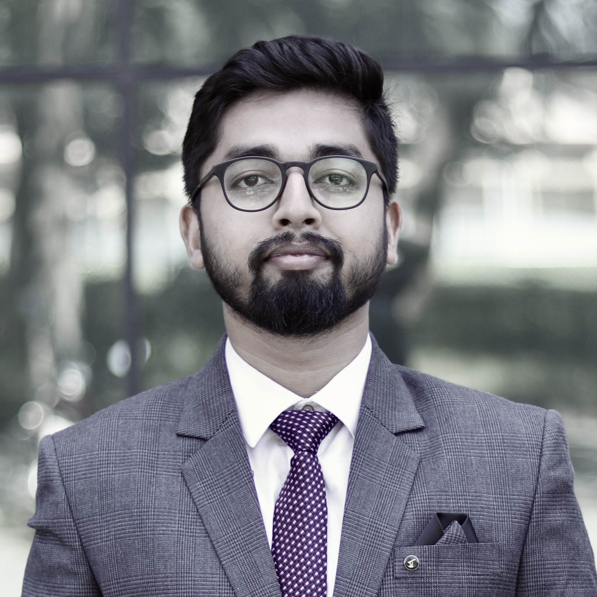

Research Fellow (Post-Doc)
Dept. of Civil, Structural & Environmental Engineering
Trinity College Dublin, Ireland
I am a Research Fellow at Trinity College Dublin working at the intersection of structural dynamics, physics-informed machine learning, and renewable energy systems. My research spans structural health monitoring, digital twin development for wind turbines, probabilistic ML for composite materials, and wave-based non-destructive evaluation.

Research Fellow (Post-Doc)
Dept. of Civil, Structural & Environmental Engineering, Trinity College Dublin, Ireland
Guest Faculty
Dept. of Civil Engineering, NERIST, Arunachal Pradesh, India
PhD, Structural Engineering
Indian Institute of Technology Guwahati (IITG), India
B.Tech., Civil Engineering
NERIST, Arunachal Pradesh, India
Mechanical Systems and Signal Processing, 250, 114190 · 2026
Acta Acustica, 9, 15 · 2025
Mechanical Systems and Signal Processing, 223, 111872 · 2025
Journal of Nondestructive Evaluation, Diagnostics and Prognostics, 8(4) · 2025
Ultrasonic field estimation for random p- and s-wavenumbers in isotropic solids using DPSM
Wave Motion, 139, 103628 · 2025
Engineering Applications of Artificial Intelligence, 131, 107828 · 2024
A deep learning approach for anomaly identification in PZT sensors using point contact method
Smart Materials and Structures, 32(9), 095027 · 2023
Mechanical Systems and Signal Processing, 197, 110360 · 2023
Ultrasonics, 131, 106939 · 2023
Structural Control and Health Monitoring, 29(12), e3115 · 2022
IEEE Access, 9, 120512–120524 · 2021
50th Annual Review of Progress in Quantitative NDE · 2023
Bayesian filtering for parameter estimation of mechanical properties of isotropic material
Symposium on Ultrasonic Electronics, Vol. 42 · 2021
CAD / CAE
AutoCAD · SAP2000 · STAAD.Pro
Programming
MATLAB · Python
ML Stack
PyTorch · TensorFlow · scikit-learn · pandas · NumPy
Associate Member, American Society of Civil Engineers
Student Member, American Concrete Institute
Student Member, Institute of Electrical and Electronics Engineers
Office phone — to be added
Dept. of Civil, Structural & Environmental Engineering
Trinity College Dublin
Dublin 2, Ireland